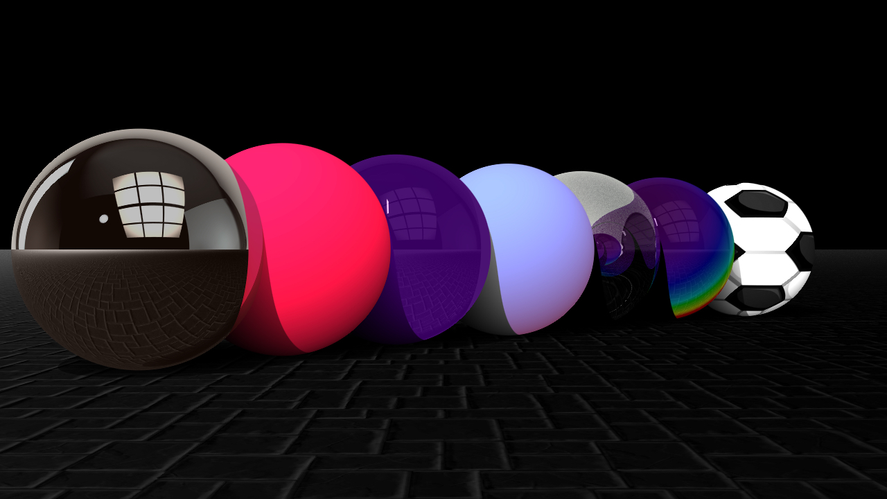

ABOUT Ray Tracer
In the Spring of 2014, I took VIZA656, Image Synthesis also called the Ray Tracer course. I developed my ray tracer in C++, OpenGl and GLUT. In order to read OBJ files I wrote my own OBJ parser. Features include Lambert, Phong, Gooch shading, raytraced shadows, normal mapping, texture mapping, specular reflection, refraction, iridescence, environment mapping, motion blur, depth of field, translucence, glossiness.
Languages used: C++, OpenGL, GLUT

Mirror, lambert, phong, gooch, glass, iridescence, texture mapping, normal mapping
Refraction, environment sphere
Depth of field animation
Cubist - camera effect